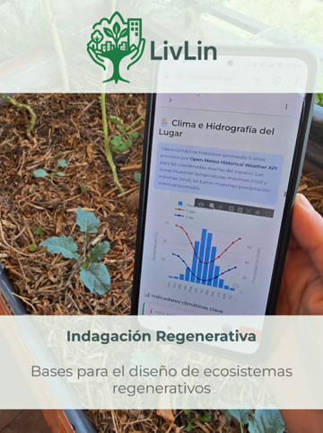

Herramienta Oficial
Plataforma de Indagación Regenerativa
La herramienta central para el análisis, diseño y monitoreo de ecosistemas regenerativos, basada en el modelo de la Flor de la Permacultura.

La herramienta central para el análisis, diseño y monitoreo de ecosistemas regenerativos, basada en el modelo de la Flor de la Permacultura.
Registra el potencial de un espacio analizando las siete dimensiones de la Flor de la Permacultura.
Define objetivos claros y establece prioridades basadas en el diagnóstico previo.
Lleva un registro fotográfico y documental de los cambios en el terreno.
Nuestra herramienta no es solo un formulario, es un motor de análisis que procesa múltiples capas de información para diagnosticar la salud de un ecosistema:
Sistematizamos la 'línea base' ecológica del lugar integrando datos en tiempo real:

Utilizamos un algoritmo propio para cuantificar el potencial regenerativo del espacio:
Evaluamos el proyecto a través de los 7 pétalos de la Permacultura, abordando tanto lo técnico como lo social:


La plataforma genera la hoja de ruta para la implementación y el monitoreo continuo:
Te invitamos a explorar el Modo Demostración. Podrás interactuar con informes de casos reales, visualizar gráficos climáticos y entender cómo se calculan los niveles de abundancia regenerativa en la práctica.
Creemos en el conocimiento abierto. Esta plataforma es gratuita para uso personal y comunitario. Si necesitas una implementación personalizada para tu organización, contáctanos.
Hablemos de tu proyecto